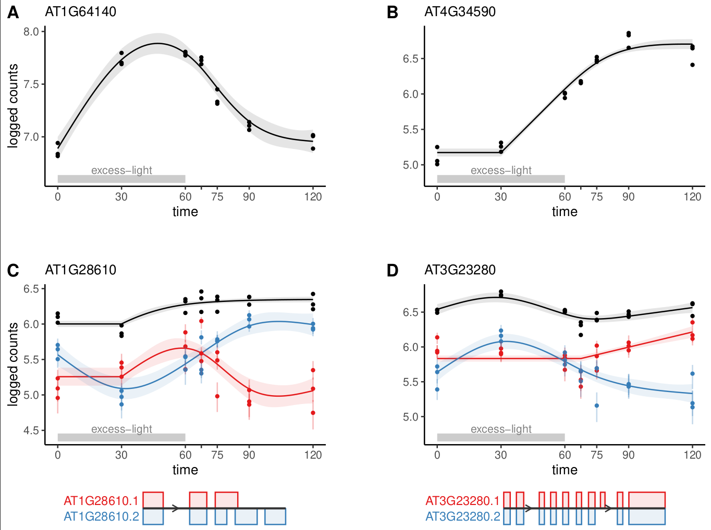

cpam (changepoint additive models)
An R package for omics time series analysis.
Read the full paper here

Application of cpam to RNA-seq time series of Arabidopsis plants treated with excess-light.
Key features
- Changepoint detection: Identify sharp transitions in expression.
- smooth trends: Model expression as a smooth function of time.
- Shape-constrained trends: Cluster targets into biologically meaningful temporal shape classes.
- Quantification uncertainty: Account for uncertainty in expression estimates.
-
Transcript-level analysis
- Perform gene- or transcript-level inferences.
- Aggregate -values at the gene level for improved power.
- Case-only or case-control time series: Analyse time series data with or without controls.
- User-friendly: Sensible defaults and an interactive shiny interface.
Our new package cpam provides a comprehensive framework for analysing time series omics data that combines statistical rigour with practical utility. The method leverages modern statistical approaches while remaining user-friendly, through sensible defaults and an interactive interface. Researchers can directly address key questions in time series analysis—when changes occur, what patterns they follow, and how responses are related. While we have focused on transcriptomics, the framework is applicable to other high-dimensional time series measurements, making it a valuable addition to the omics analysis toolkit.
This is the initial development version of cpam and we are actively seeking community feedback. If you encounter issues or have suggestions for improvements, please open an issue. We welcome questions and discussion about using cpam for your research through Discussions. Our goal is to work with users to make cpam a robust and valuable tool for time series omics analysis. We can also be contacted via the email addresses listed in our paper here.
Usage
Step 2: Create a tibble for the experimental design.
In this example, we are using kallisto-generated counts, so we provide the file path for each sample (otherwise you can provide the counts directly as count matrix)
exp_design
#> # A tibble: 50 × 4
#> sample time path condition
#> <chr> <dbl> <chr> <chr>
#> 1 JHSS01 0 output/kallisto/JHSS01/abundance.h5 treatment
#> 2 JHSS02 0 output/kallisto/JHSS02/abundance.h5 treatment
#> 3 JHSS03 0 output/kallisto/JHSS03/abundance.h5 treatment
#> 4 JHSS04 0 output/kallisto/JHSS04/abundance.h5 treatment
#> 5 JHSS05 0 output/kallisto/JHSS05/abundance.h5 treatment
#> 6 JHSS06 5 output/kallisto/JHSS06/abundance.h5 treatment
#> 7 JHSS07 5 output/kallisto/JHSS07/abundance.h5 treatment
#> 8 JHSS08 5 output/kallisto/JHSS08/abundance.h5 treatment
#> 9 JHSS09 5 output/kallisto/JHSS09/abundance.h5 treatment
#> 10 JHSS10 5 output/kallisto/JHSS10/abundance.h5 treatment
#> # ℹ 40 more rowsStep 3: Obtain a table with the transcript-to-gene mapping
N.B. This is not needed if your counts are aggregated at the gene level, but transcript-level analysis with aggregation of -values to the gene level is recommended. E.g., for Arabidopsis thaliana:
t2g
#> # A tibble: 54,013 × 2
#> target_id gene_id
#> <chr> <chr>
#> 1 AT1G01010.1 AT1G01010
#> 2 AT1G01020.2 AT1G01020
#> 3 AT1G01020.6 AT1G01020
#> 4 AT1G01020.1 AT1G01020
#> 5 AT1G01020.4 AT1G01020
#> 6 AT1G01020.5 AT1G01020
#> 7 AT1G01020.3 AT1G01020
#> 8 AT1G03987.1 AT1G03987
#> 9 AT1G01030.2 AT1G01030
#> 10 AT1G01030.1 AT1G01030
#> # ℹ 54,003 more rowsStep 4: Run cpam
cpo <- prepare_cpam(exp_design = exp_design,
count_matrix = NULL,
t2g = t2g,
model = "case-only",
import_type = "kallisto",
num_cores = 5) # about 1 min
cpo <- compute_p_values(cpo) # 30 secs to 5 min
cpo <- estimate_changepoint(cpo) # 1-10 min
cpo <- select_shape(cpo) # 1-20 minStep 5: Visualise the results
Load the shiny app for an interactive visualisation of the results:
visualise(cpo) # not shown in vignetteOr plot one gene at a time:
plot_cpam(cpo, gene_id = "AT3G23280") Isoform 1 (AT3G23280.1) has a changepoint at 67.5 min and has a monotonic increasing concave (micv) shape.
Isoform 1 (AT3G23280.1) has a changepoint at 67.5 min and has a monotonic increasing concave (micv) shape.
Isoform 2 (AT3G23280.2) has no changepoint and has an unconstrained thin-plate (tp) shape.
Generate a results table (tibble):
results(cpo)Detailed tutorials
The following two tutorials serve an introduction to the package and they provide code to reproduce the results for the case studies presented in the manuscript accompanying the cpam package.